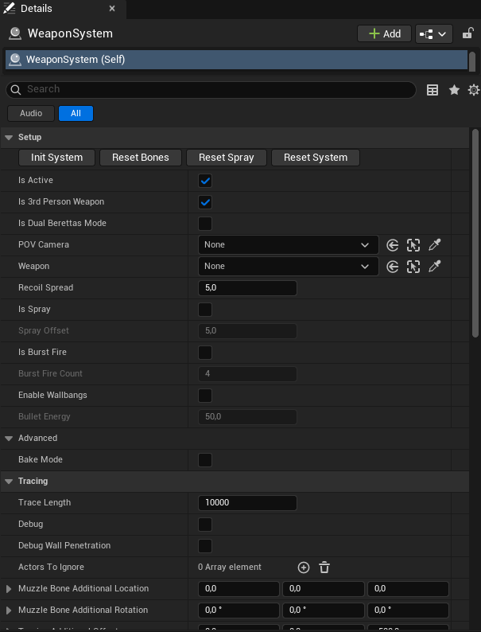
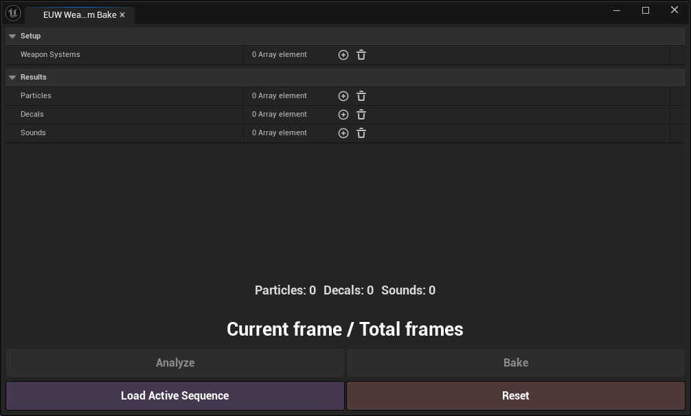

Weapon System
Fully procedural weapon system for cinematic renders and games. Automatically detects skeleton bones, spawns muzzle flashes, shells, decals, impacts, and sounds. Supports baking into Level Sequence via a built-in Editor Utility Widget.
Полностью процедурная система оружия для кинематографических рендеров и игр. Автоматически определяет кости скелета, спавнит вспышки, гильзы, декали, импакты и звуки. Поддерживает запечку через встроенный виджет.

- Download and extract the PyToolkit plugin (v1.8+) into the
Pluginsfolder of your Unreal Engine installation:C:\Program Files\Epic Games\UE_5.6\Engine\Plugins. - Launch Unreal Engine and enable the following plugins (Edit > Plugins):
- Editor Scripting Utilities
- Python Editor Script Plugin
- Python Foundation Packages
- Http Blueprint
- PyToolkit
- Two versions are available:
- A ready-to-use project with WeaponSystem preconfigured (recommended for exploring the blueprint).
- A standalone blueprint for integration into an existing project.
- To install the standalone blueprint: copy the
BlueprintsandPhysicalMaterialsfolders from the archive into your project'sContentfolder. - Add physical surface definitions to
DefaultEngine.iniunder[/Script/Engine.PhysicsSettings](a ready-made file is included in the archive). - Launch the project and verify all physical surfaces appear in Project Settings → Physics → Physical Surface.
Requirements:
- Unreal Engine 5.6 or newer
- PyToolkit plugin v1.8+
- Скачайте и распакуйте плагин PyToolkit (минимум 1.8 версии) в папку
Pluginsв корневой директории Unreal Engine:C:\Program Files\Epic Games\UE_5.6\Engine\Plugins. - Запустите Unreal Engine и включите плагины (Edit > Plugins):
- Editor Scripting Utilities
- Python Editor Script Plugin
- Python Foundation Packages
- Http Blueprint
- PyToolkit
- Для загрузки доступны 2 версии:
- Готовый проект с уже настроенной WeaponSystem.
- Отдельный блюпринт для интеграции в существующий проект.
- Для установки отдельного блюпринта: скопируйте папки
BlueprintsиPhysicalMaterialsиз архива в папкуContentвашего проекта. - Добавьте определения физических поверхностей в
DefaultEngine.iniв раздел[/Script/Engine.PhysicsSettings](готовый файл есть в архиве). - Запустите проект и убедитесь, что все поверхности появились в Project Settings → Physics → Physical Surface.
Требования:
- Unreal Engine 5.6 или новее
- PyToolkit plugin версии 1.8 и выше
- Procedural spawning of all effects with Level Sequence baking support
- Automatic detection of weapon skeleton bones and sockets
- Two camera modes: POV (first-person) and 3rd person
- Ricochet system with particles and sound
- Burst fire mode — useful for shotguns and Glock
- Bullet tracers with configurable color, width, scale, and lifetime
- Physically simulated bullets
- Impacts and decals based on physical material (blood, metal, concrete, wood, dirt, etc.)
- Blood splatter decals on walls behind characters (CS2 decals included)
- Weapon, impact, and shell sounds with reverb support in MRQ renders
- Two particle systems: Cascade and Niagara
- Dual Berettas mode — alternates flashes and shells between two bones
- Built-in Editor Utility Widget for analysis and baking
- Процедурный спавн всех эффектов с возможностью запечки в Level Sequence
- Автоматическое определение нужных костей скелета оружия
- Поддержка двух режимов камеры: POV (от первого лица) и 3rd person
- Система рикошетов с частицами и звуком
- Система очередей (Burst fire) — полезно для дробовиков и Glock
- Трассеры пуль с настройкой цвета, ширины, масштаба и времени жизни
- Физически корректные пули — поддержка симуляции физики
- Импакты и декали на основе физического материала (кровь, металл, бетон, дерево, грязь и др.)
- Брызги крови на стенах позади персонажей (декали CS2 включены в пакет)
- Звуки оружия, импактов и гильз с поддержкой реверберации в MRQ рендере
- Поддержка двух вариантов частиц: Cascade и Niagara
- Дуальный режим (Dual Berettas) — чередование вспышек и гильз между двумя костями
- Встроенный Editor Utility Widget для анализа и запечки

Setup
- Init System — Test button. Fires one test shot triggering all spawn systems.
- Reset Bones — Re-scans and identifies bones/sockets on the weapon skeleton.
- Reset Spray — Resets bullet counter and spray pattern.
- Reset System — Clears all decals from the map.
- Bake Mode — Switches between runtime and baking mode. Managed by EUW — do not enable manually.
- Is Active — Master switch. Disables all firing and effect logic when off.
- Is 3rd Person Weapon — 3rd person mode. Offsets taken from the weapon actor directly.
- Is Dual Berettas Mode — Dual weapon mode. Alternates flashes and shells between two bones.
- POV Camera — Camera for first-person ray tracing.
- Weapon — Weapon actor (SkeletalMeshActor).
- Is Spray — Enables spray pattern logic.
- Is Burst Fire — Burst fire mode.
- Burst Fire Count — Number of shots in a burst.
- Enable Wallbangs — Enable wall penetration.
Muzzle Flash
- Muzzle Flash Enable — Enables muzzle flash spawning.
- Muzzle Flash Bone / Bone 2 — Primary and optional secondary socket.
- Muzzle Flash — Flash particle system.
- Muzzle Flash Scale — Flash scale.
Shells
- Shells Enable — Enables shell ejection. Visible only in simulation/play mode.
- Shell Bone / Bone 2 — Primary and optional secondary bone.
- Shell Speed Min / Max — Random speed range for shells.
- Shell Mesh — Shell mesh (StaticMesh).
- Shells Mass — Shell mass in grams.
Decals & Sound
- Decals Enable — Enable decal spawning on surfaces.
- Blood Decals Enable — Enable blood decals on walls behind characters.
- Weapon Sound Enable — Enable firing sound.
- Impact Sound Enable — Enable impact sounds.
- Shells Sound Enable — Enable shell sounds.
Time Dilation
- Muzzle Flash Time Dilation — Slows/speeds flash effects.
- Impact Time Dilation — Slows/speeds impact effects.
- Sound Time Dilation (Pitch) — Adjusts pitch based on time dilation.
- TR Time Dilation Multiplier — Global time dilation from TimeRemapping asset.
Setup
- Init System — Тестовая кнопка. Производит один тестовый выстрел.
- Reset Bones — Повторно сканирует кости/сокеты скелета оружия.
- Reset Spray — Сбрасывает счётчик пуль и паттерн спрея.
- Reset System — Очищает все декали с карты.
- Bake Mode — Переключает между runtime и режимом запечки. Управляется через EUW — не включать вручную.
- Is Active — Мастер-переключатель. Если выключен — вся логика отключается.
- Is 3rd Person Weapon — Режим от третьего лица.
- Is Dual Berettas Mode — Дуальный режим. Вспышки и гильзы чередуются между двумя костями.
- POV Camera — Камера для трассировки от первого лица.
- Weapon — Актор оружия (SkeletalMeshActor).
- Is Spray — Включает логику паттерна спрея.
- Is Burst Fire — Режим очереди.
- Burst Fire Count — Количество выстрелов в очереди.
- Enable Wallbangs — Включить пробитие стен.
Muzzle Flash
- Muzzle Flash Enable — Включает спавн вспышки дула.
- Muzzle Flash Bone / Bone 2 — Основная и дополнительная кость/сокет.
- Muzzle Flash — Система частиц вспышки.
- Muzzle Flash Scale — Масштаб вспышки.
Shells
- Shells Enable — Включает спавн гильз. Видны только в режиме симуляции/плея.
- Shell Bone / Bone 2 — Основная и дополнительная кость.
- Shell Speed Min / Max — Диапазон скорости гильзы.
- Shell Mesh — Меш гильзы (StaticMesh).
- Shells Mass — Масса гильзы в граммах.
Декали и звук
- Decals Enable — Включить спавн декалей.
- Blood Decals Enable — Включает декали крови на стенах позади персонажей.
- Weapon Sound Enable — Включить звук выстрела.
- Impact Sound Enable — Включить звуки попадания.
- Shells Sound Enable — Включить звуки гильз.
Time Dilation
- Muzzle Flash Time Dilation — Замедление/ускорение эффектов вспышки.
- Impact Time Dilation — Замедление/ускорение эффектов импакта.
- Sound Time Dilation (Pitch) — Питч звуков в зависимости от time dilation.
- TR Time Dilation Multiplier — Глобальный time dilation из TimeRemapping.

The Editor Utility Widget included with the blueprint records all WeaponSystem effects into a Level Sequence frame by frame. Baking is optional — the system works without it. However, if you need identical results on every render (WeaponSystem randomizes effects each playback), baking is required.
- Weapon Systems — List of WeaponSystem actors to bake.
- Analyze — Analyzes all Sequencer frames and collects data on particles, decals, and sounds.
- Bake — Bakes the collected data into the Level Sequence.
- Load Active Sequence — Loads data from the open Sequencer and finds all WeaponSystem actors.
- Reset — Resets the widget data.
Editor Utility Widget, включённый в пакет, записывает все эффекты системы в Level Sequence покадрово. Запечка необязательна — система работает и без неё. Но если нужен одинаковый результат при каждом рендере (WeaponSystem рандомизирует эффекты при каждом воспроизведении) — без запечки не обойтись.
- Weapon Systems — Список акторов WeaponSystem для запечки.
- Analyze — Анализирует кадры секвенсера и собирает данные о частицах, декалях и звуках.
- Bake — Запекает данные в Level Sequence.
- Load Active Sequence — Загружает данные из открытого секвенсера.
- Reset — Сбрасывает данные виджета.